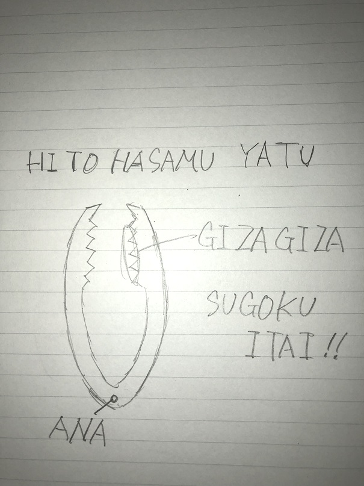
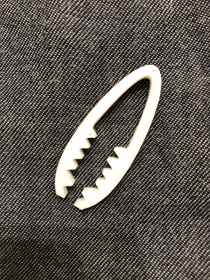
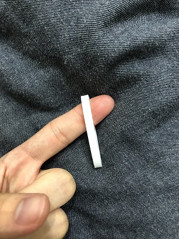

HITO HASAMU YATU
スケッチ

作ったもの

stlファイル
stlファイル
作品の説明
この作品は人を挟むことのみを目的としたピンセットです。
挟む部分がギザギザしており、鋭い痛みを感じさせてくれます。
反対の先端部分には穴が開いており、紐を通してストラップにすることが可能です。
筆箱などに着けるとオシャレでいいかもしれませんね。
実際に使用してみましょう！

...........................................................あまりいたくないですね...。
いや、痛くない訳では無いんです。...ただ、すごい痛いかと言われるとそうでもないような...。
まぁ、安全面もバッチリということにしときましょう！！
憎いやつがいるという人はこのピンセットをダウンロードして、そいつの指を挟んでやりましょう♪♪
この作品を作った理由
憎いやつがいるとかそういう事ではありません。誰かと違うものを作りたいという逆張り精神と
とある町工場のおにぎり具だけを抜き取る機会の様な無意味なものを作りたいという意思の下製作しました。
制作プロセスの中で調べたこと
自分が出来る範囲で取り組んだため、特にありません！！！！